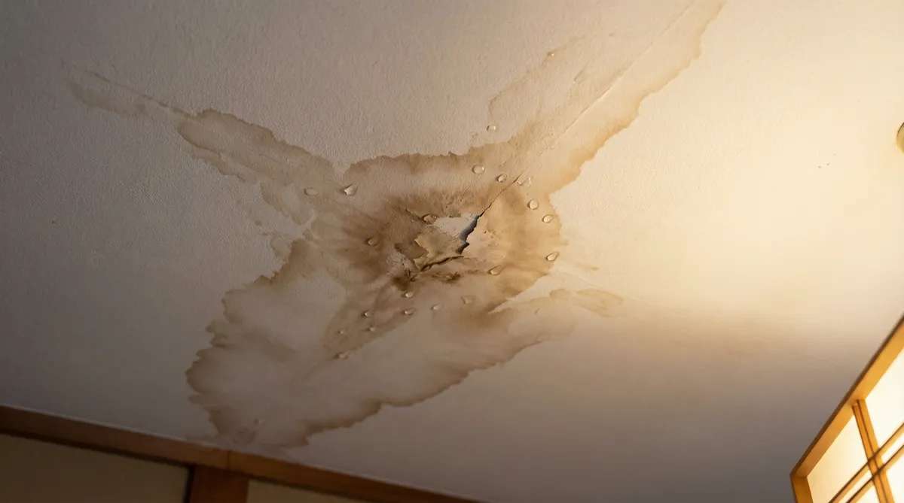
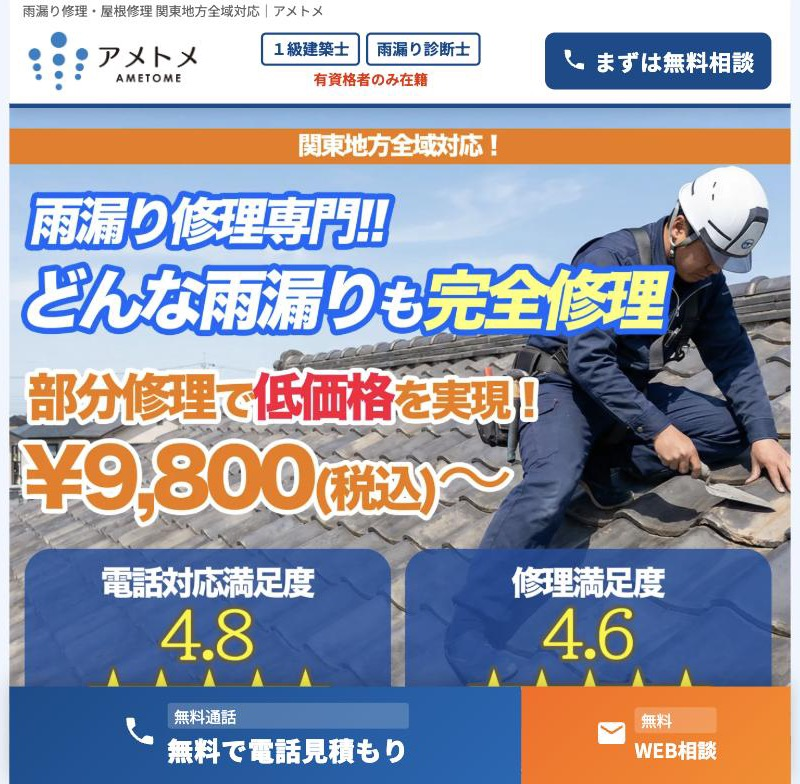
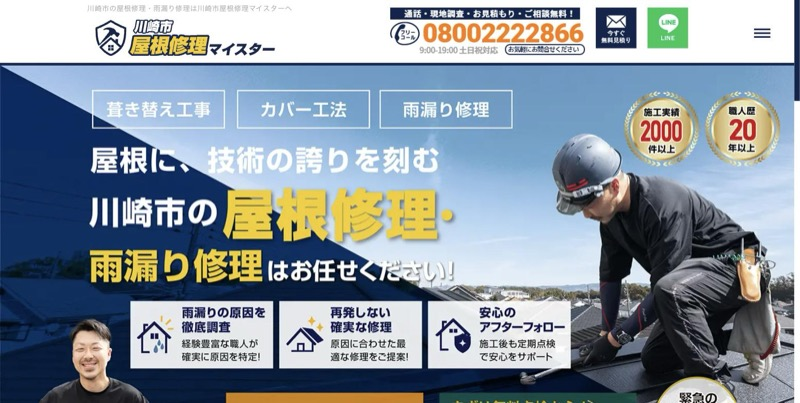
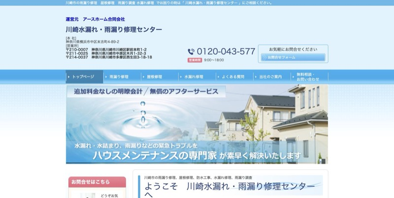
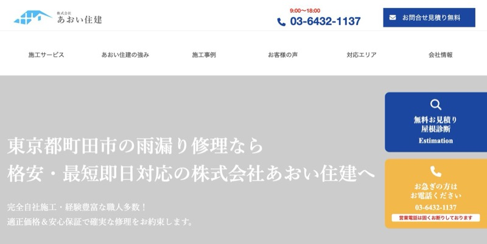
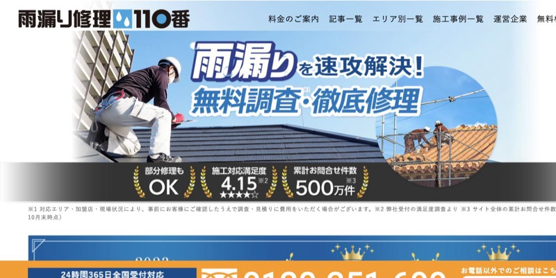
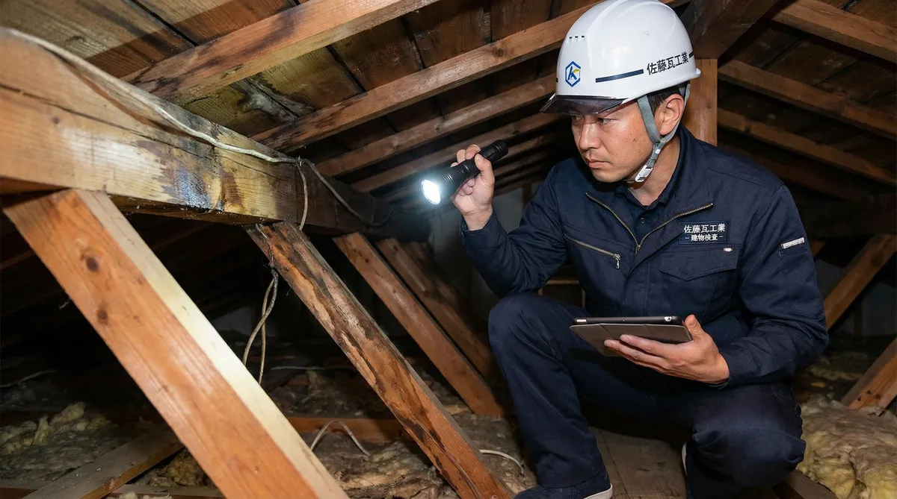
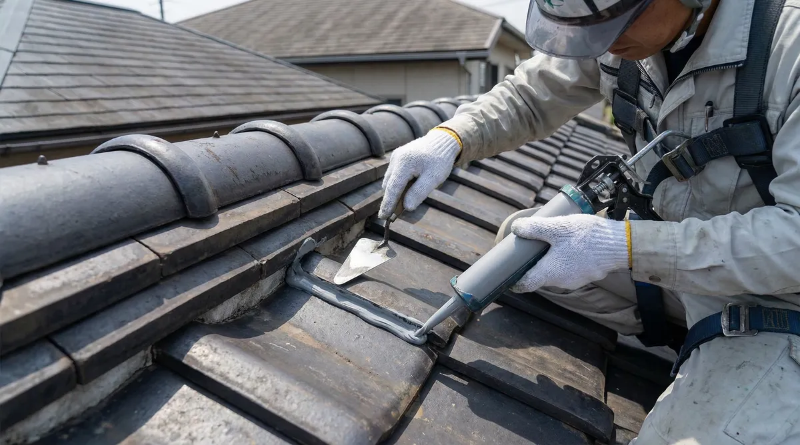
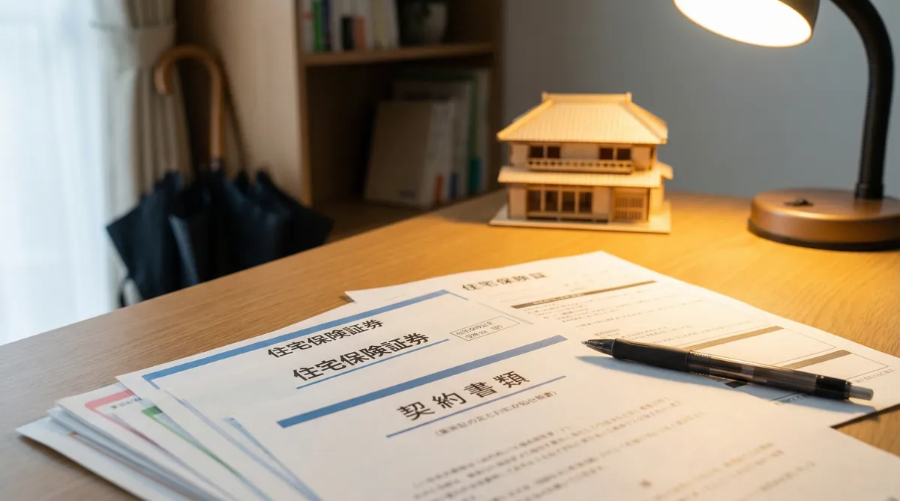
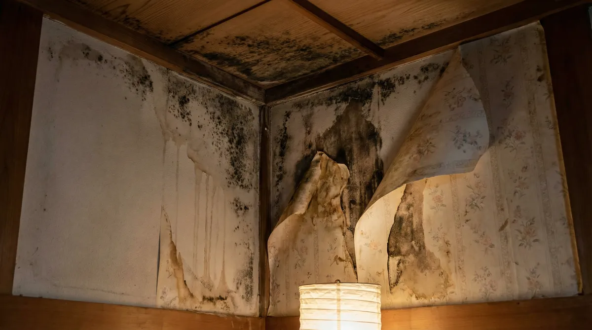

【川崎市】雨漏り修理業者おすすめ5選を徹底比較！費用相場と失敗しない選び方【2026年版】
おすすめ5選を比較
「天井にシミができている」「雨の日にポタポタ音がする」——川崎市で雨漏りに気づいたら、放置は厳禁です。

川崎市は住宅が密集し、築年数の経った戸建てやアパートも多いエリア。屋根の劣化に気づきにくく、雨漏りがかなり進行してから発覚するケースが目立ちます。放置すると木材の腐食やシロアリ・カビの発生につながり、修理費用が数倍にふくらむこともあります。
とはいえ、いざ調べてみると業者の数が多すぎて「どこに頼めばいいの？」と迷ってしまいますよね。私も築25年の実家で雨漏りを経験したとき、業者選びでかなり悩みました。
そこでこの記事では、川崎市に対応する雨漏り修理業者の公式情報を調べて、調査・見積もり無料で頼めるおすすめ5社を比較しました。あわせて費用相場・業者選びのコツ・応急処置・火災保険の注意点もまとめています。
川崎市の雨漏り修理業者おすすめ5選（比較表）
まずは今回比較した5社を一覧でどうぞ。いずれも現地調査・見積もりは無料の業者に絞っています。
| 業者名 | 受付時間 | 対応エリア | タイプ |
|---|---|---|---|
| アメトメ | 24時間365日 （深夜・早朝・土日祝OK） |
川崎市を含む関東全域 | 雨漏り修理専門 |
| 川崎市屋根修理マイスター | 9:00〜19:00 （土日祝対応） |
川崎市全域・神奈川県全域 | 屋根専門店 |
| 川崎水漏れ・雨漏り修理センター | 9:00〜18:00 （日曜除く） |
川崎市全域 | ハウスメンテナンス |
| あおい住建 | 9:00〜18:00 | 東京都・神奈川県 | 屋根修理店 |
| 雨漏り修理110番 | 24時間365日 | 全国（加盟店対応） | 業者紹介サービス |
※2026年9月時点の各社公式サイトの情報をもとに作成。最新の条件は各社にご確認ください。
それぞれの特徴を順番に見ていきます。
第1位アメトメ｜24時間365日受付の雨漏り修理専門サービス

今回比較した中で、私がまずおすすめしたいのがアメトメです。理由はシンプルで、「雨漏り専門」×「24時間365日受付」×「調査・見積もり無料」の3拍子がそろっているのがこの1社だったから。
雨漏りって、台風の夜や日曜の朝など「業者が閉まっている時間」に見つかることが多いんですよね。アメトメは深夜・早朝・土日祝でも電話がつながり、最短即日で駆けつけてくれます。
- 現地調査・お見積もりが完全無料（キャンセル料もなし）
- 部分修理なら9,800円（税込）〜の低価格設定
- 1級建築士・雨漏り診断士の有資格者が在籍
- 雨漏り専門だから原因特定が早い（屋根・外壁・ベランダ・サッシまわり全対応）
- 見積もり後の追加料金なし。納得してからの着工
| 調査・見積もり | 無料 |
|---|---|
| 修理費用 | 部分修理 9,800円（税込）〜 |
| 受付時間 | 24時間365日（深夜・早朝・土日祝も対応） |
| 対応エリア | 川崎市を含む関東全域 |
| 電話番号 | 0120-094-956（通話無料） |
第2位川崎市屋根修理マイスター｜実績2,000件超・職人直営

川崎市全域と神奈川県全域に対応する屋根修理の専門店。施工実績2,000件超・職人歴20年以上の代表が現場に立つ直営スタイルで、散水調査による原因究明と再発防止を重視した修理が特徴です。
- 現地調査・屋根診断・相談は無料
- 土日祝対応・緊急対応体制あり
- 火災保険申請手続きのサポートあり
第3位川崎水漏れ・雨漏り修理センター｜市内3営業所の地域密着

アースホーム合同会社が運営し、川崎市内に3つの営業所を持つハウスメンテナンス店。事前見積もり後の追加料金は一切なしで、修繕箇所が再度トラブルになった場合は無償対応。赤外線調査で「なかなか止まらない雨漏り」の原因特定にも対応します。
- 無料相談・見積もり対応、最低料金3,200円〜
- 修繕箇所の再トラブルは無償対応・定期点検あり
- 受付9:00〜18:00（日曜除く）
第4位あおい住建｜完全自社施工・雨漏り修理1万円〜

世田谷区に本社を置き、川崎市・横浜市など東京都・神奈川県に対応する屋根修理店。足場まで含めた完全自社施工で中間マージンを抑えており、雨漏り修理は1万円〜（税込）と部分修理の価格が明瞭です。
- 経験10年以上の職人が対応、最短即日駆けつけ
- 調査・見積もり完全無料
- 受付9:00〜18:00
第5位雨漏り修理110番｜全国対応の業者紹介サービス

全国の加盟店ネットワークから近くの業者を手配してくれる紹介型のサービスで、受付は24時間365日。自社施工ではなく加盟店への取次ぎのため、実際に来る業者は地域・タイミングによって異なります。
- 24時間365日の電話受付
- 全国対応なので実家など遠方の物件の相談にも使える
- 施工品質は手配される加盟店により差が出る点は理解しておく
失敗しない業者選び 5つのポイント

私が業者選びで学んだチェックポイントは次の5つです。
① 現地調査・見積もりが無料か
優良業者の多くは現地調査と見積もりを無料で行っています。まずは無料の範囲で原因と概算費用を把握し、2〜3社の相見積もりを取るのが失敗しない基本です。
② 原因を写真で説明してくれるか
屋根の上は自分では確認できません。調査後に撮影した写真を見せながら「どこから」「なぜ」漏れているかを説明してくれる業者なら、不要な工事を提案されるリスクを大きく減らせます。
③ 見積もりの内訳が明瞭か
「工事一式 ◯◯万円」だけの見積もりは要注意。材料費・施工費・足場代などが項目ごとに書かれているかを確認し、不明な項目は遠慮なく質問しましょう。
④ 保証・アフター対応があるか
雨漏りは再発しやすいトラブルです。施工後の保証内容（期間・範囲）を書面で提示してくれるかは、施工品質への自信の表れでもあります。
⑤ 緊急時にすぐ動いてくれるか
雨漏りは進行が早いため、受付から駆けつけまでのスピードも重要です。夜間・休日に発生した場合は、24時間受付の業者にまず応急処置を依頼し、並行して相見積もりを進めるのが現実的です。
悪徳業者・点検商法に注意
川崎市のような戸建ての多いエリアでは、屋根の訪問営業トラブルが少なくありません。次のような業者は避けてください。
- アポなし訪問で「今すぐ工事しないと危険」と不安をあおる
- 「火災保険を使えば実質無料」と断定して契約を急がせる
- 大幅な値引きを提示して即日契約を迫る
- 調査写真を見せない、見積もりが「一式」表記だけ
訪問営業で契約してしまった場合も、条件を満たせばクーリング・オフ（8日以内）が可能です。不安なときは川崎市消費者行政センターに相談しましょう。
川崎市の雨漏り修理 費用相場

川崎市を含む東京近郊の一般的な相場は以下のとおりです。
| 工事内容 | 費用目安 | こんなケース |
|---|---|---|
| コーキング補修・部分補修 | 1万〜20万円 | サッシまわり・外壁のひび割れなど軽度の雨漏り |
| 屋根材の部分交換 | 1万〜30万円 | 瓦・スレートの割れ、棟板金の浮きなど |
| 雨樋の修理・交換 | 3千〜10万円 | 雨樋の詰まり・破損による雨漏り |
| 防水工事（ベランダ・屋上） | 10万〜50万円 | ベランダ床の防水層の劣化 |
| 屋根カバー工法 | 60万〜200万円 | 屋根全体が劣化しているが下地は健全な場合 |
| 屋根の葺き替え | 80万〜300万円 | 下地まで傷んでいる場合の全面リフォーム |
| 足場設置（必要な場合） | 15万〜50万円 | 2階建て以上の屋根・外壁工事に付帯 |
※建物の状態・使用材料により変動します。正確な金額は現地調査のうえでの見積もりをご確認ください。
雨漏りに気づいたらまずやる応急処置
業者の到着までに被害を広げないため、次の応急処置をしておきましょう。
- バケツ＋雑巾で受ける：水滴の落下点にバケツを置き、中に雑巾を入れて跳ね返りを防ぐ
- 家電・家具を移動：濡れる範囲の電化製品はコンセントを抜いて移動する
- ビニールシートで養生：床や畳をシートで覆い、二次被害を防ぐ
- 雨水の侵入箇所を写真に残す：修理の見積もりや火災保険の申請時に役立つ
雨漏り修理に火災保険は使える？

条件を満たせば、雨漏り修理に火災保険が使えるケースがあります。
| 対象になりうるケース | 対象外のケース |
|---|---|
| 台風・強風・雹・大雪など自然災害が原因と認められる場合（風災・雹災・雪災補償） | 経年劣化、施工不良、メンテナンス不足が原因の場合 |
| 被害発生から3年以内の申請 | 地震が原因の場合（地震保険の領域） |
注意したいのは、適用の可否を判断するのは保険会社だということ。「保険で必ず無料になります」と断定したり、業者による代理申請を持ちかけたりする業者は避けてください。保険申請はあくまで契約者本人が行うものです。まずは加入中の保険の補償内容（風災補償の有無・免責金額）を確認しましょう。
雨漏りを放置するとどうなる？

「少しのシミだから」と放置すると、被害は建物の内部で静かに進行します。
| 放置期間 | 起こりうる被害 |
|---|---|
| 数週間〜数ヶ月 | 天井・壁紙のシミ拡大、カビの発生（アレルギーの原因に） |
| 半年〜1年 | 断熱材・下地木材の腐食、漏電リスク |
| 1年以上 | シロアリの発生、構造材の劣化による耐震性の低下。修理費用が数十万〜百万円規模に |
初期なら数万円で済んだはずの補修が、放置によって大規模工事になるのが雨漏りの怖いところです。気づいた時点での無料調査を強くおすすめします。
よくある質問
川崎市の雨漏り修理の費用相場はいくらですか？
部分補修なら1万〜20万円程度が目安です。屋根全体のカバー工法は60万〜200万円、葺き替えは80万〜300万円ほど。原因や範囲で大きく変わるため、まずは無料調査で原因を特定してもらいましょう。
調査や見積もりだけでもお金はかかりますか？
この記事で紹介した業者はいずれも現地調査・見積もり無料です。ただし散水調査などの特殊調査は有料になる場合があるため、事前に無料の範囲を確認しておくと安心です。
夜間や休日でも対応してもらえますか？
業者によります。アメトメは24時間365日、深夜・早朝・土日祝も受付しています。地元工務店は9時〜18時前後の受付が多いため、緊急時は受付時間を確認してから連絡しましょう。
賃貸マンションで雨漏りしたらどこに連絡すればいいですか？
賃貸の場合はまず管理会社または大家さんに連絡してください。建物の修繕義務は原則として貸主にあります。勝手に業者を手配すると費用を負担できない場合があります。
まとめ｜川崎市の雨漏りは「無料調査→相見積もり」が鉄則
最後に、川崎市で雨漏りに気づいたときの動き方をおさらいします。
- 応急処置で被害の拡大を防ぐ（屋根には登らない）
- 無料調査で原因を特定してもらう
- 写真と内訳つきの見積もりを2〜3社で比較する
- 訪問営業・「保険で無料」の営業トークには乗らない
「今まさに漏れていて急いでいる」という場合は、24時間365日受付で調査・見積もり無料のアメトメにまず連絡するのがおすすめです。深夜でも電話がつながり、応急処置から根本修理まで対応してもらえます。